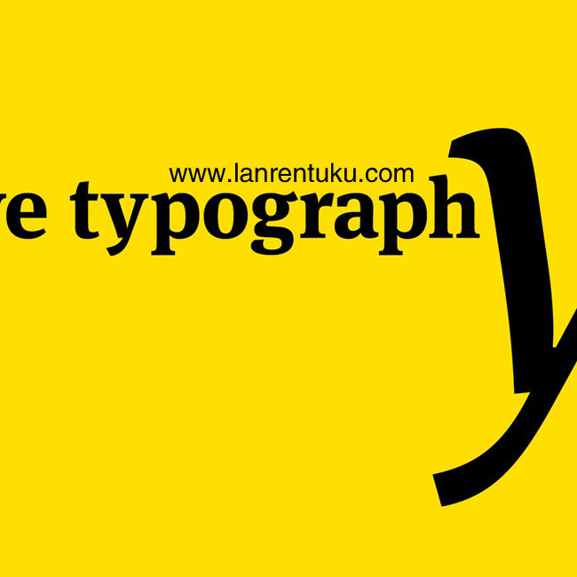

页面常见js特效
1.模态弹出框
点击按钮即可出现弹出层
开发周期：1小时
2.下拉菜单
开发周期：1小时
3.Tab选项卡
公告内容面板
规则内容面板
论坛内容面板
安全内容面板
公益内容面板
开发周期：1小时
4.提示框
提示框居右
开发周期：30分钟
5.弹出框
开发周期：30分钟
6.放大镜特效

开发周期：1小时
7.图片遮罩


开发周期：1.5小时
7.图片轮播


开发周期：1小时
8.手风琴效果

The best
The offspring of a customized orbiter, O飇ostem arose as the best balanced
home for our plans. So we submitted to its conditions.

Has been reduced
Paired hosts come out nicely after only two cycles now. Their size has been
reduced to a half the original as planned, and indeed they show an
evolutionary advantage in the process of fixing self-generated instructions.
Plus, they are beautiful.

Beautifully
To keep my sanity I wear the tactile sensors all the time. They translate
beautifully; I can even see distances while still on Psykesoma. This was
quite a discovery. We have grown more adaptable than expected.

Uneasy to match
Yewoona had to travel farther and longer than I did. Her base orbiter was
set to keep a complex combinational path that made it uneasy to match our
circuits. But her nature showed stronger than programmed.

Adapted to serve
Keep feeding them. We will never be this lucky again; an autogenerated
species adapted to serve all our needs!

At soonest
"Blood is dark red, iron dark blue, this tale is blissful and so are you". I
should get to the hotel at soonest. The agency guy must be there already,
with some luck we'll have some nice dinner on him. How's that?
开发周期：2小时
css3新增加属性特效
1.变形--旋转
我不想旋转(^_^)
2.变形--扭曲
我不想被扭曲(^_^)
3.变形--位移
我向右向下移动
4.动画--过渡属性
鼠标移动到图形上，就看到神奇效果啦~~
5.动画2--过渡属性
鼠标移动到图形上，就看到神奇效果啦~~
6.动画3